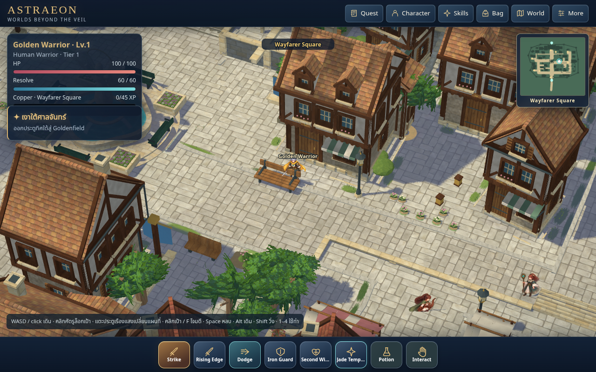
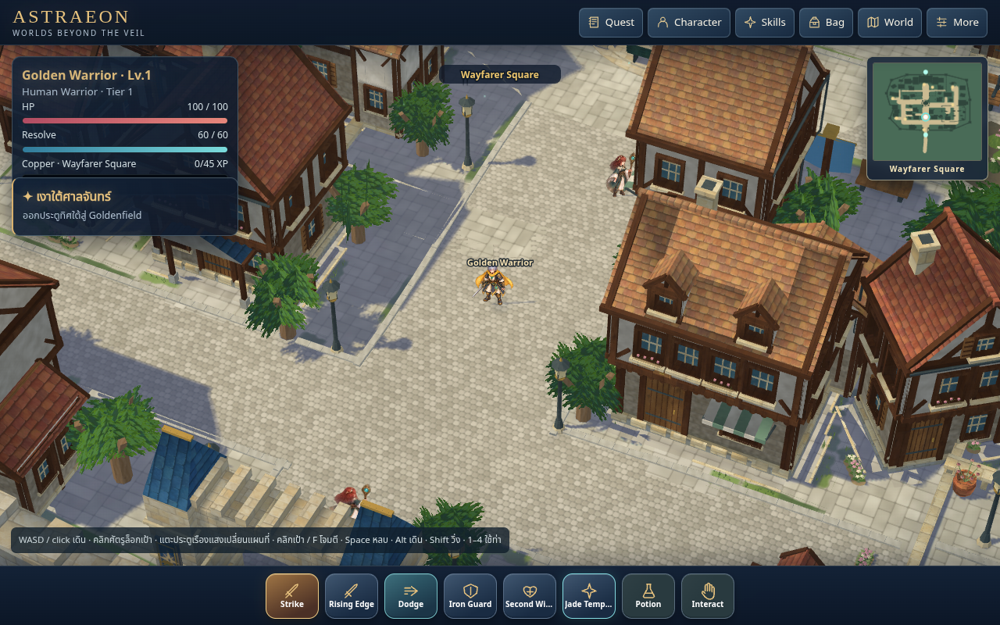
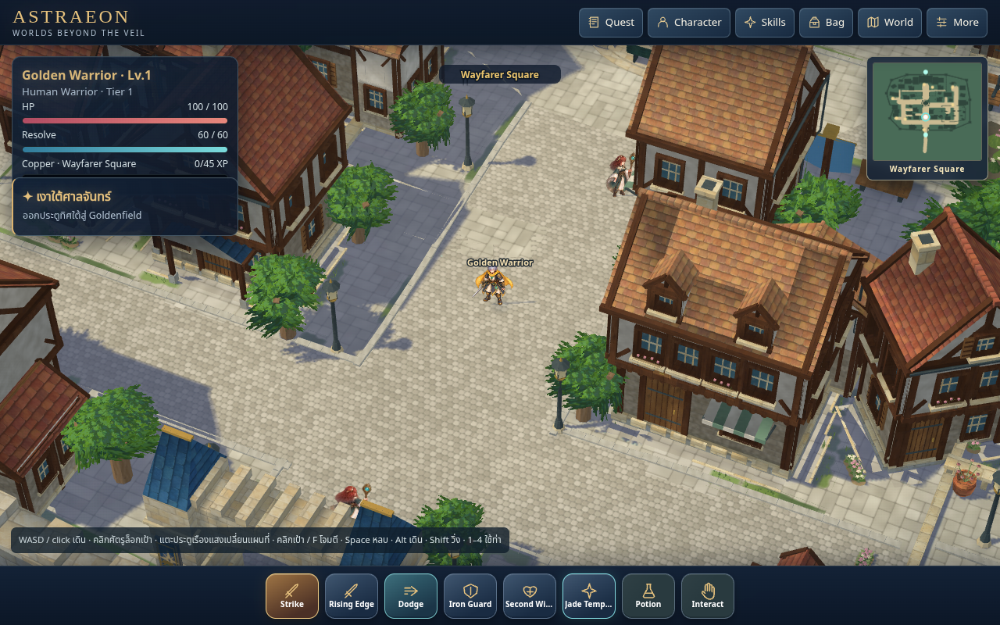
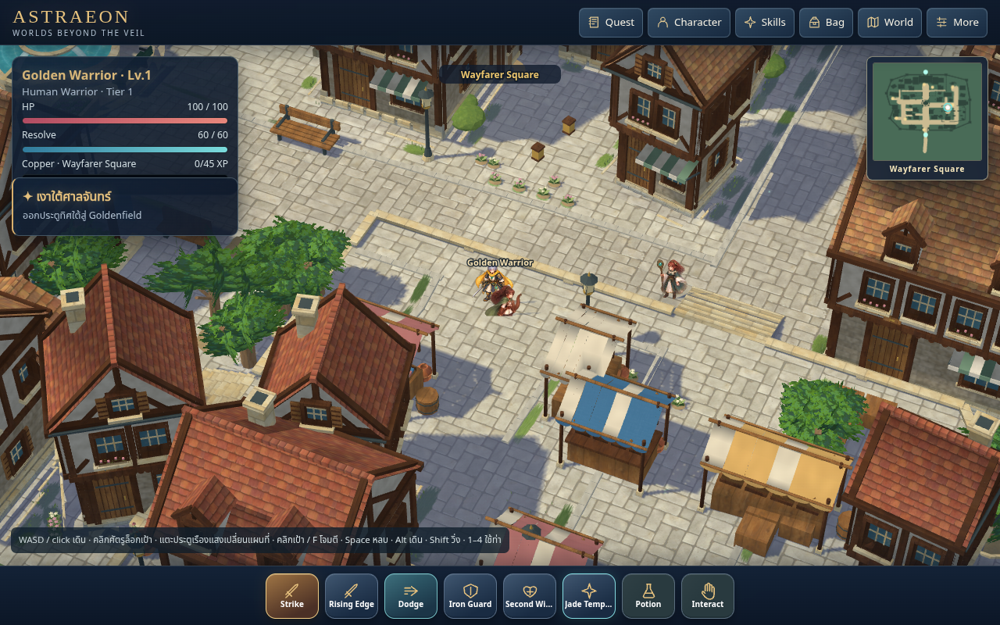
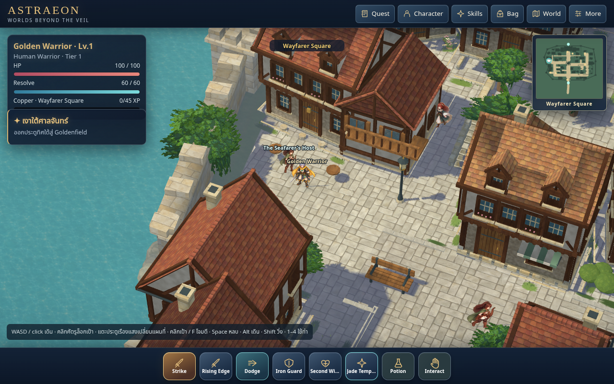
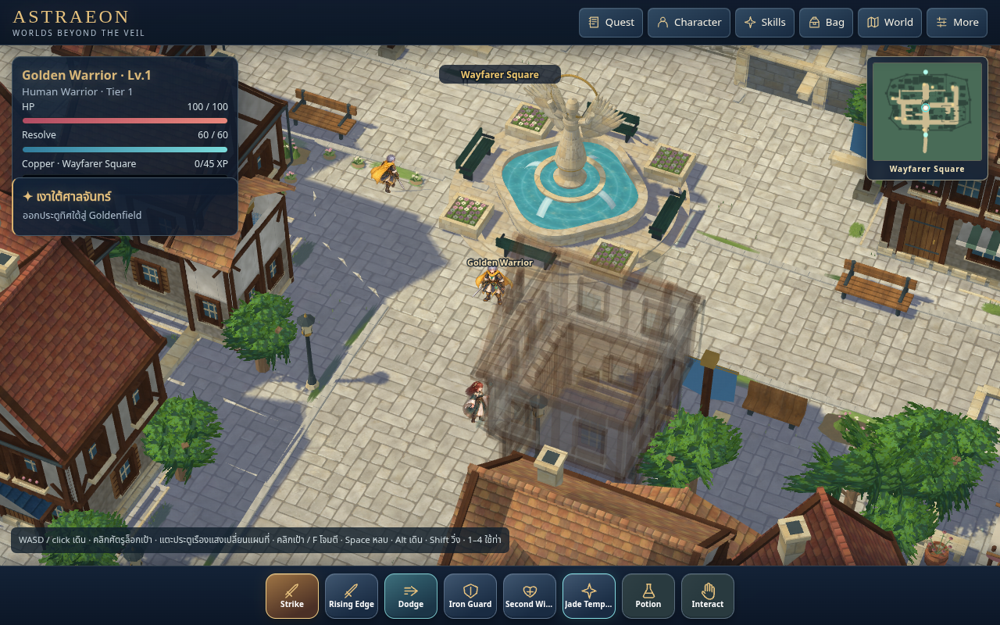

Aged stone paths, grounded planting and rounded trees.
Source69 / cache74 on codex/world-pipeline-v3-proof. Original artwork and native meshes use the supplied RO3 screenshots as the visual reference. Agent scope review is separate from user Golden approval and performance acceptance.
Matched native house view
Source68 on the left; source69 on the right. Drag to compare. Both 1280×666 world buffers, pixel ratio1, distance160 / yaw25° / pitch46°. Actor/NPC animation frames can differ.
RO3 foundation and facade reference
 04_08_45: connected irregular grass, worn masonry, timber relief, sills, accessories and clearly bounded pavers.
04_08_45: connected irregular grass, worn masonry, timber relief, sills, accessories and clearly bounded pavers.
Final merchant street: continuous rectangular paving, grass in native joints and planted building-side edges, native1×.Tree volume at native resolution

Earlier trial: crossed leaf cards and the tiny cobble repeat, before the later path correction. Final native tree layers, coherent rectangular path and edge planting; trunks and collision footprints retained.
Final native tree layers, coherent rectangular path and edge planting; trunks and collision footprints retained.Road pattern correction

Earlier trial: small cobble repeat clashed with rectangular building-side paving.Current source: one shared worn-stone scale, no stone-image pads; native grass follows actual mortar joints near the edges.Meaningful planting, neighborhood and court
Avenue: curb at the building-zone edge, coherent aged rectangular stone, irregular grass and rounded trees.
Market: masonry, window depth and goods stations.
Inn: exterior construction and planted accessories.
Source68 fountain preserved in the new paving context.